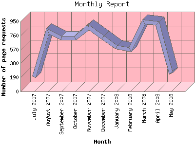

Analog 5.31
Analog 5.31 Report Magic 2.16
Report Magic 2.16The Monthly Report identifies activity for each month in the report
time frame. Remember that each page hit can result in several server requests
as the images for each page are loaded.
Note: Depending on the
report time frame, the first and last months may not represent a complete
month's worth of data, resulting in lower hits.

| Month | Number of page requests | Percentage of the bytes | |
|---|---|---|---|
| 1. | July 2007 | 200 | 2.77% |
| 2. | August 2007 | 818 | 13.15% |
| 3. | September 2007 | 723 | 11.29% |
| 4. | October 2007 | 724 | 8.49% |
| 5. | November 2007 | 869 | 15.48% |
| 6. | December 2007 | 729 | 6.41% |
| 7. | January 2008 | 598 | 8.18% |
| 8. | February 2008 | 566 | 8.60% |
| 9. | March 2008 | 945 | 14.87% |
| 10. | April 2008 | 921 | 9.55% |
| 11. | May 2008 | 244 | 1.22% |
Most active month March 2008 : 945 pages sent.
Monthly average: 667 pages sent.
This report was generated on May 6, 2008 05:30.
Report time frame July 18, 2007 21:56 to May 5, 2008 23:59.
| Web statistics report produced by: | |
| Analog 5.31 | Report Magic 2.16 |